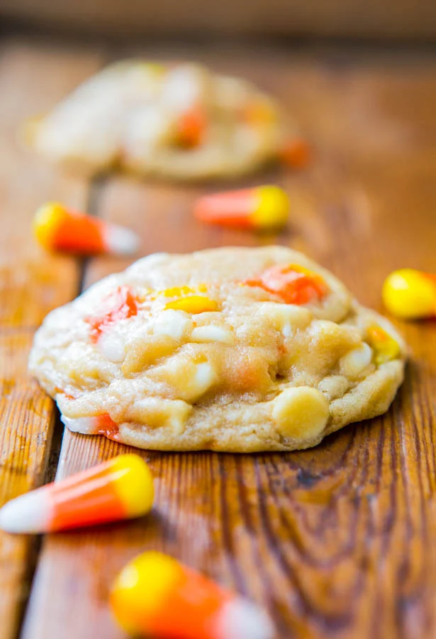

Candy Corn Cookies
Source: “White Chocolate Candy Corn Cookies” from averiecooks.com
Yield: 3 dozen cookies
Ingredients
- ½ cup unsalted butter, softened
- ¾ cup light brown sugar, packed
- ¼ cup granulated sugar
- 1 large egg
- 1 tbsp vanilla extract
- 2 tbsp cream or half-and-half
- 2 tsp cornstarch
- 1 tsp baking soda
- A pinch of salt, optional to taste
- 1 ½ cups candy corn
- 1 cup white chocolate chips or salted peanuts
Instructions
- To the bowl of a stand mixer fitted with the paddle attachment (or large bowl and electric hand mixer), cream together the first 5 ingredients (through vanilla) on medium-high speed until light and fluffy, about 5 minutes.
- Stop, scrape down the sides of the bowl, and add the next 5 ingredients (through optional salt), and mix on low speed until just incorporated, about 1 minute; don’t overmix.
- Add the candy corn, white chocolate chips (or peanuts), and mix until just incorporated.
- Using a medium 2-inch cookie scoop, form heaping two-tablespoon mounds. Place mounds on a large plate, flatten mounds slightly, cover with plastic wrap, and refrigerate for at least 3 hours, or up to 5 days, before baking. Do not mix with warm dough because cookies will spread and bake thinner and flatter.
- Important note - Strategically place candy corn so that it’s not baking directly on the cookie sheet because it will melt, burn, or turn runny if it is. The candy corn pieces need to be in the interior of the cookies, shielded and buffered by dough.
- Preheat oven to 350F, line a baking sheet with a Silpat or spray with cooking spray. Place mounds on baking sheet, spaced at least 2 inches apart and bake for about 9 minutes, or until edges have set and tops are just beginning to set, even if slightly undercooked, pale and glossy in the center. Do not overbake because cookies will firm up as they cool. Baking longer than 10 minutes could result in cookies with overly browned undersides.
- Allow cookies to cool on the baking sheet for about 5 minutes before transferring to a wire rack to finish cooking.